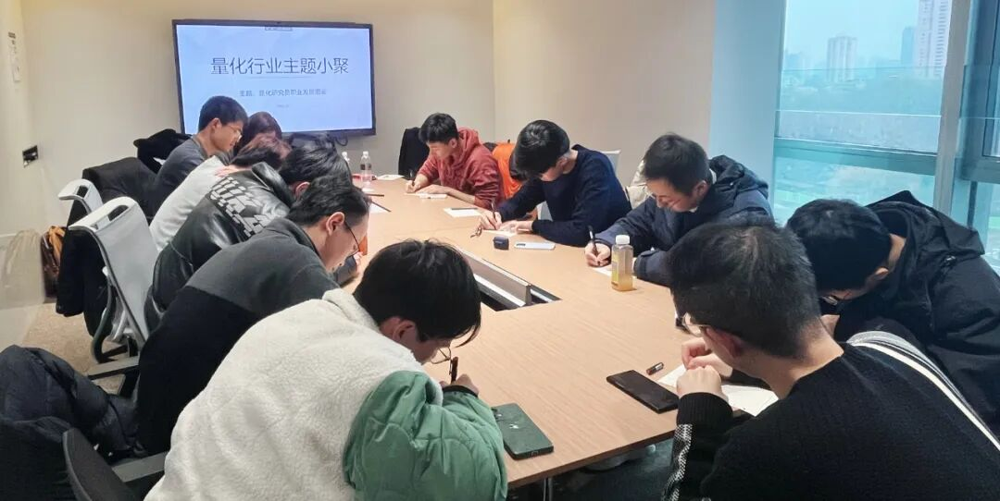

主题回顾
本次主题：量化研究员职业发展图鉴
主题背景：根据中国量化白皮书调查显示，行业内普遍认为做好 Quant 的关键素质先后顺序分别是：扎实的专业技能、聪明、快速领悟、对世界的认知、勤奋努力。聪明有助于单次研究的胜率，而努力则决定长期的水平。当下行业人均学历卷的不能再卷的情况下，还有什么因素推动了一个 Quant 从优秀走向卓越？
交流话题：1.从业者分享自己的职业生涯，如工作内容、职业发展等？2.机器学习与模型择时，如何做好市值轮动与股票权重？3.期权期货策略与衍生品高频策略？4.做市策略 delta one market making/my trading experience 与中国市场股票实际交易中的T+1所带来的限制？5.自身实盘的体会与因子信号挖掘的瓶颈？
小聚成员
本次活动根据大家填写的报名表，依照“深度交流+多元讨论”的主旨，一共邀请15位小伙伴参与，从事量化行业全职工作的伙伴12位，目前在量化行业实习的伙伴3位，值得一提的是，参与本次小聚的全职和实习伙伴所在公司多为知名百亿私募、头部券商、自营机构。

活动反馈
了解做市和行业。——quant
我已经入职fulltime大半年了，这半年在公司学到了很多东西，很高兴可以参与这次分享会和大家分享这些知识。J总对国内量化发展进程的一些分享让我有很多收获，L同学的关于交易的分享提升了我很多理解。感谢高总。——某自营研究员
今天的交流不仅仅包括了衍生品、高频套利、alpha等内容，也包括了求职规划的内容，感觉受益匪浅，感谢主办方的用心以及分享的小伙伴。——某券商自营量化
L同学今天让我了解了其他交易商的一些交易的内容和一些新鲜的交易组成。通过与大家的交流了解到了国内量化行业目前的发展与未来的趋势。——量化小白
第一次参加超级量化的从业人员小聚，结识了不同方向的同事、前辈，对整个量化、衍生品做市的业务有了更多的了解。尤其几位在自营交易部门的同事，分享了自己的体会，让我这个职场新人受益良多。——某小私募quant
今天L同学所提到的对交易的一些看法让我感触颇深，因为我本身接触因子和模型较多，但对交易这种行为不是很了解。——刚入行的量化小白
J总的发言让我了解到了国外大私募的工作方式和框架，开阔了眼界，比如citadel的几十年积累，国内同行的起步追赶。——某 wa jue ji
非常感谢超级量化组织这次活动，尤其是J总对中国量化市场的分析和关于衍生品市场的见解。我了解了和平时工作很不一样的领域和内容。——某量化小白
今天来的老师很多做衍生品方向，对这部分内容从广度上有了更多的理解。从职业发展的角度讲，对平台、能力对个人未来发展的影响有了更多的认知。总的来说，受益匪浅！谢谢东哥，谢谢各位老师！——准备秋招的应届生
大家都很乐于分享，我有启发。——Quant
今天L同学的交流让我了解到以博弈思路主导交易这一新的思路，同时从其他同行中也听到了行业的发展，和从业的状态，总的来说较有收获。——某量化研究员
了解到更多行业里很多有意思的现象，也对市场上不同信息有了新的洞察，收获满满！——行业从业者
了解大家的想法和行业动态，遇到了一些很久没见的老朋友，上海的寒冷天气也不能阻挡大家对于量化的热情和对交流的向往，我们下次再见！——量化从业者

大家的收获札记